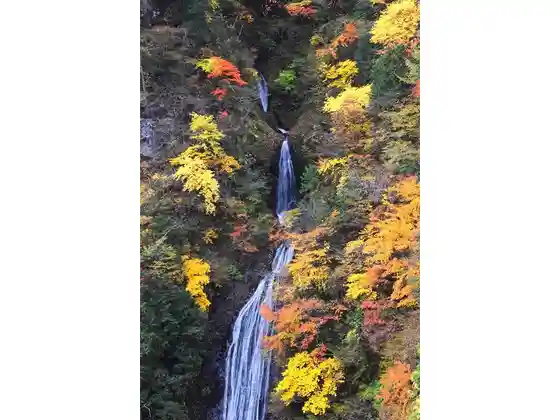
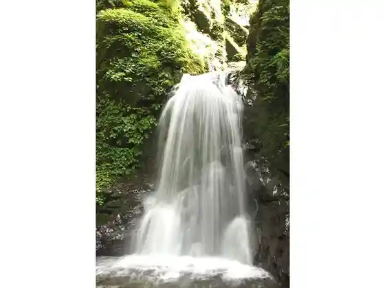

Maru Kami Falls
Ogano, Saitama · 0494-79-1100 · Official / source link
Ryokami Sanroku Hana no Sato Daria Sono
Ogano, Saitama · 0494-79-1100 · Official / source link

Ryokami Sanroku Hana no Sato Daria Sono
Ogano, Saitama · 0494-75-5060 · Official / source link

Oga no Kaseki Kan
Ogano, Saitama · 0494-75-5060 · Official / source link
Ryokami Kokumin Kyuyochi Hana Shobu Sono
Ogano, Saitama · 0494-79-1533 · Official / source link
Roadside Station Ryokami Onsen Kusurishi Baths
Ogano, Saitama · 0494-75-5060 · Official / source link
Hannya no Oka Park
Ogano, Saitama · 0494-75-4179 · Official / source link
Teshigawara Seika
Ogano, Saitama · 0494-75-0048 · Official / source link
Ogano Kabuki Saron
Ogano, Saitama · 0494-75-0024 · Official / source link
Roadside Station Ryokami Onsen Kusurishi Baths
Ogano, Saitama · 0494-26-7805 · Official / source link
Roadside Station Ryokami Onsen Kusurishi Baths
Ogano, Saitama · 0494-75-5060 · Official / source link